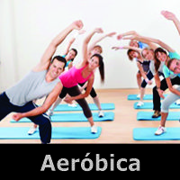
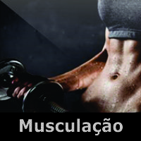
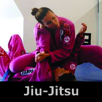

| ATIVIDADES | |||
|---|---|---|---|
|  | É um tipo de treinamento aeróbico que utiliza grande variedade de movimentos dos membros inferiores e membros superiores repetidos, provocando, constantemente, uma sobrecarga no sistema cardiovascular. Isso aumenta a necessidade de absorção de oxigênio, realizando uma espécie de treinamento ao coração, os pulmões e o sistema cardiovascular, que irá proporcionar o transporte desse oxigênio mais rápido e eficaz a todas as partes do corpo (AFAA - Aerobic and Fitnes Association of America). | ||
|  | O treinamento de força, conhecido popularmente como musculação é uma forma de exercício contrarresistência, praticado normalmente em ginásios, para o treinamento e desenvolvimento dos músculos esqueléticos. Utiliza a força da gravidade (com barras, halteres, pilhas de peso ou o peso do próprio corpo) e a resistência gerada por equipamentos, elásticos e molas para opor forças aos músculos que, por sua vez, devem gerar força oposta através de contrações musculares que podem ser concêntricas, excêntricas e isométricas. | ||
|  | Jiu-jítsu, jujitsu ou jujutsu (em japonês: 柔術, transl. jū, "suavidade", "brandura", e jutsu, "arte", "técnica"),[a] é uma arte marcial japonesa (Budô) que utiliza como principais técnicas golpes de alavancas, torções e pressões para derrubar e dominar um oponente. Sua origem, como sucede com quase todas as artes marciais vetustas, não pode ser apontada com total certeza, o que se sabe por certo é que seu principal ambiente de desenvolvimento e refino foi nas escolas de samurais, a casta guerreira do Japão. Contudo, outros levantam a hipótese de ter proveniência sínica, posto que sejam também notadas influências indianas. | ||